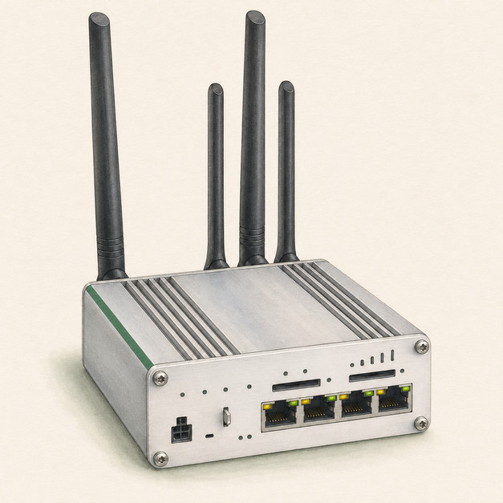

IoNod Pump
Styr och följ din vattenpump.
Styr pumpen och följ driften från mobil eller dator. Funktionerna beror på installationen.
Prova IoNod Pump → Läs om borrade brunnar →Vi planerar installationen utifrån pump, givare och uppkoppling.
Kontakta oss →Prova gränssnittet i appdemon. I en riktig anläggning anpassas funktionerna efter pump och givare.
Prova IoNod Pump →